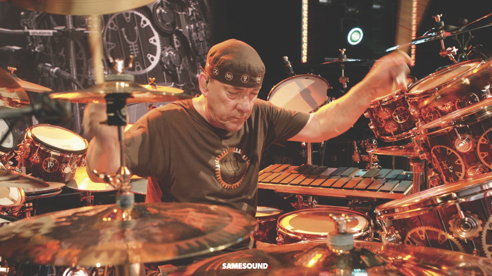

Джон Бонэм был настолько шикарен, что уже в пять лет сам собрал нечто похожее на барабанную установку из кофейных банок и коробок и пробовал на этом играть. Настоящие барабаны он получил только в пятнадцать. Бонэм играл в Led Zeppelin под псевдонимом Бонзо, именно после его смерти в 1980-м группа распалась. Журнал Classic Rock в 2005 году включил Бонэма в список лучших рок-барабанщиков всех времён, Джон на первой строчке. Согласны с коллегами и в издании Rolling Stone, их рейтинг лучших барабанщиков тоже возглавил Бонзо. При этом издание проводило опрос среди читателей и через несколько лет делало свою подборку с мнением редакторов — в обоих случаях Джон занимал первые места.
Пирт играл в группе Rush и писал для них песни. Сначала он вдохновлялся музыкой Кита Муна и Джона Бонэма, но потом нашёл свой путь.Читатели журнала Modern Drummer включили Пирта в «Зал славы современных барабанщиков» ещё в 1983 году — он стал самым молодым из музыкантов в этом списке. Classic Rock и Rolling Stone солидарны в отношении Пирта — Нил на четвёртом месте в рейтинге обоих изданий.
 Ударник The Beatles, у него, как и у других участников группы есть «Оскар» за саундтрек к фильму «Пусть будет так», звезда на Голливудской «Аллее славы», орден Британской империи, а с 2018-го и приставка «сэр» к имени, которая появилась вместе со званием «рыцаря-бакалавра», а ещё в его честь назвали малую планету. Ринго редко исполнял песни и не писал тексты, но в знаменитой Yellow Submarine пел именно он.После ухода из «Битлз», Старр начал сольную карьеру и выпустил несколько альбомов, потом собрал Ringo Starr & His All-Starr Band. Состав группы постоянно менялся, вместе они колесили по миру, в 90-х заехали и в Россию. В 2012-м ресурс CelebrityNetWorth подсчитал зарплаты и накопления всемирно известных барабанщиков и опубликовал результаты, получилось, что самый состоятельный исполнитель — Ринго.
Сэр Ричард Старки (это настоящее имя Старра) делает мир лучше — в 2015 году он вместе с женой устроил благотворительный аукцион, где одну только барабанную установку продал за 2,2 миллиона долларов.
Отец Пейса был пианистом, Иэн с детства слушал классическую музыку и планировал играть на скрипке, но увлёкся ударными. Хорошую барабанную установку он купил себе к шестнадцати, а потом год работал, чтобы расплатиться с долгами за неё.Пейс единственный бессменный участник Deep Purple. После распада группы вместе с Джоном Лордом и Тони Эштоном он собрал свой бэнд. С названием не заморачивались, Paice, Ashton & Lord просуществовала всего год. После Пейс продолжал работать с другими коллективами, пока музыканты из Deep Purple не воссоединились.
Коупленд основал группу The Police, стал в ней ударником и автором части песен. В это же время записывал сольные альбомы под псевдонимом Кларк Кент. После распада The Police Стюарт писал саундтреки к фильмам, балетам, операм и даже играм. А в 2008 году вышли смартфоны BlackBerry Bold, в которых стандартные звонки и мелодия будильника были придуманы Коуплендом.